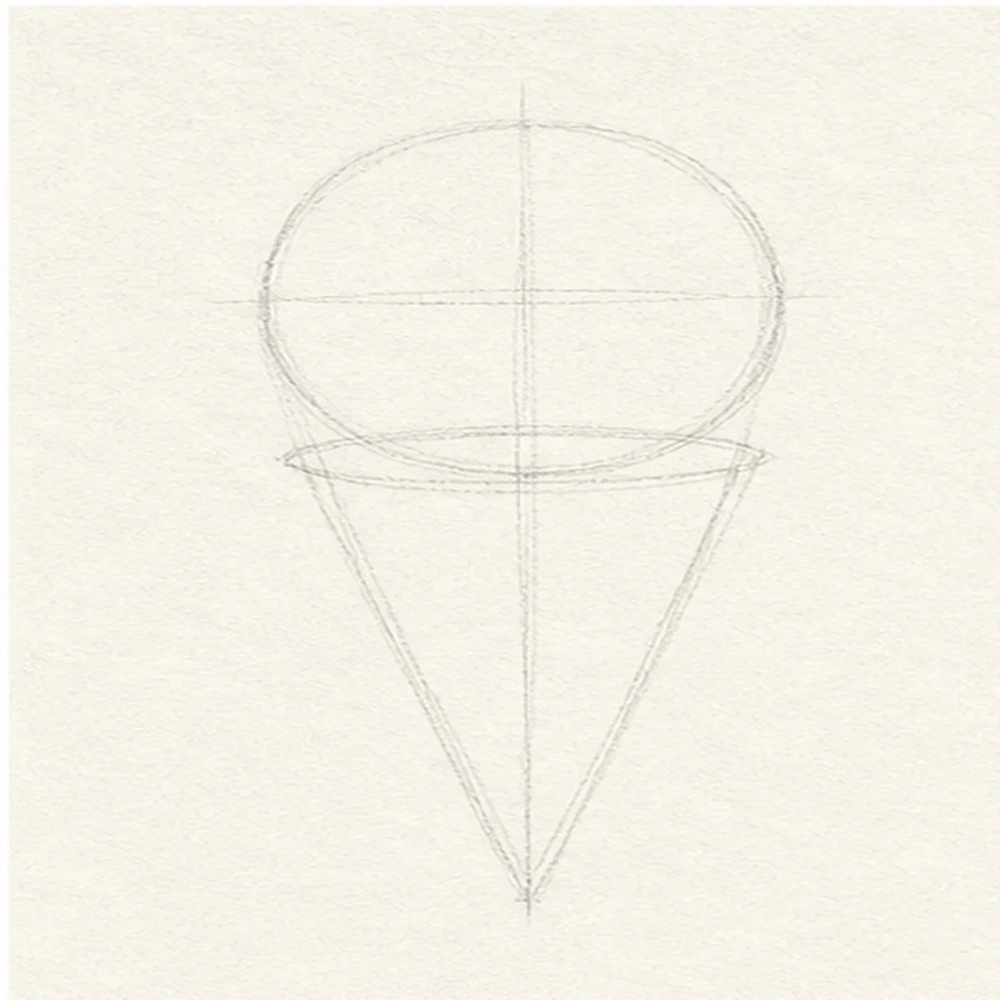
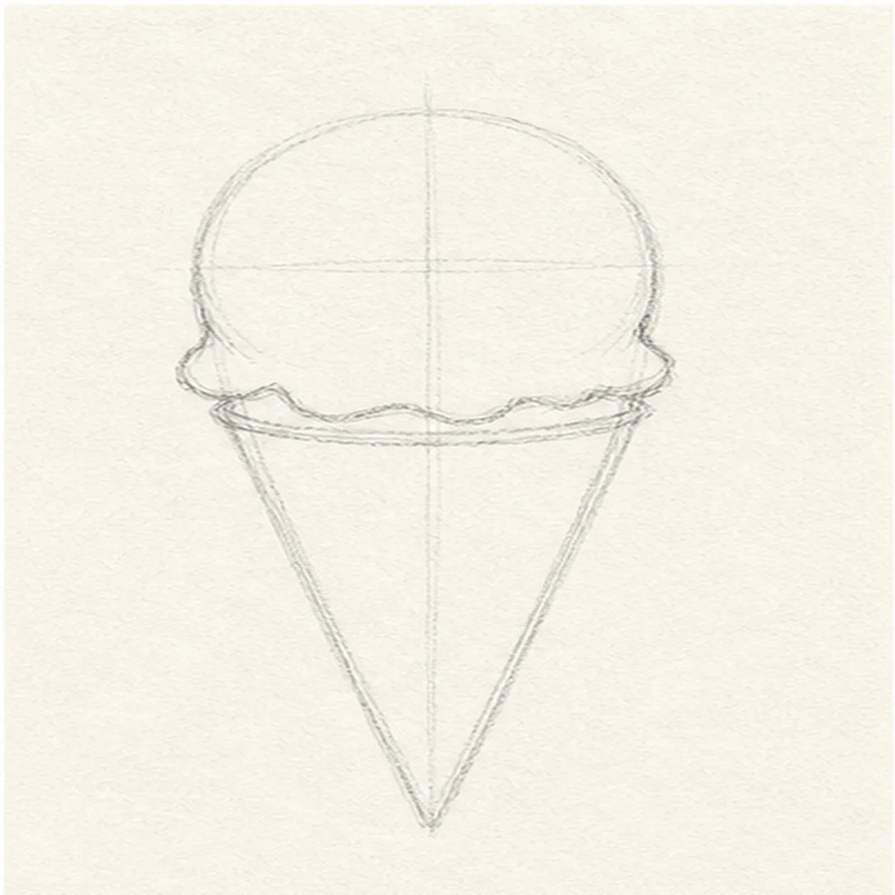
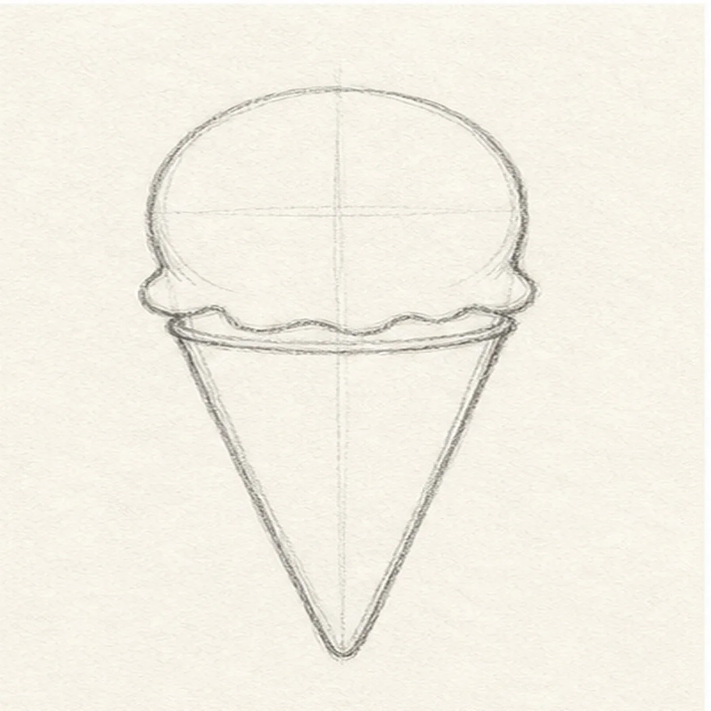
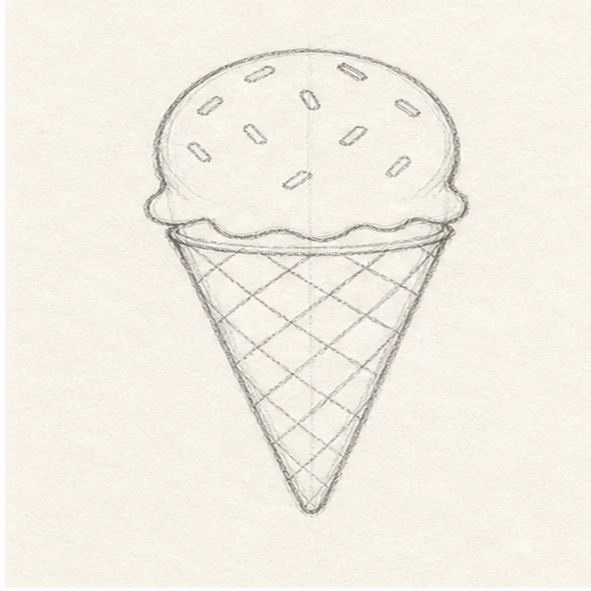
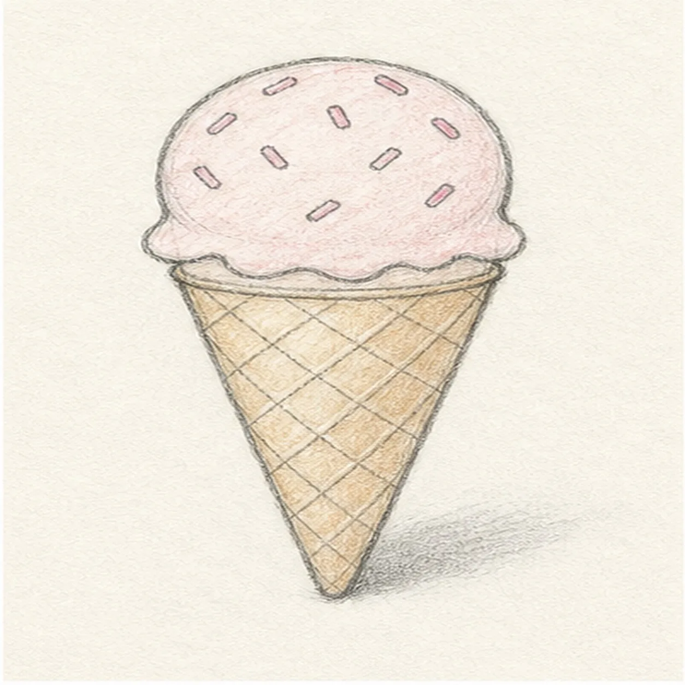

From the archive
Let's draw a waffle ice cream cone
Treat this as one small practice round: build the subject lightly, notice the shapes, then darken only the lines that help the finished sketch.
-
01

Stack the simple shapes
Draw a round scoop guide first, then tuck a tapered cone triangle underneath it.
Sketch tip: Keep the cone centered under the scoop. A straight middle guide helps the treat stand upright.
-
02

Wave the scoop edge
Add a wavy lower edge to the scoop, then draw an oval rim where the ice cream sits on the cone.
Sketch tip: Let the waves be uneven. Ice cream looks friendlier when the edge is not too perfect.
-
03

Clean the cone contour
Darken the outside scoop curve, clarify the rim, and refine the two cone sides down to the point.
Sketch tip: Do not erase every guide yet. The center line can help when you add the waffle pattern.
-
04

Cross the waffle lines
Draw diagonal lines one way across the cone, cross them the other way, and scatter small sprinkles across the scoop.
Sketch tip: Follow the cone's taper. The diamonds should feel a little narrower near the bottom.
-
05

Tint the cone and scoop
Add light tan color to the cone, a pale pink tint to the scoop, and a soft shadow off to one side.
Sketch tip: Color lightly enough that the graphite still shows through. The texture helps the cone feel sketchy instead of flat.
-
06
Finish the summer treat
Darken the keeper contours, clarify the sprinkles and waffle grid, and deepen the color and shadow that are already in place.
Sketch tip: Stop before the color becomes solid. A few white gaps make the scoop and cone feel hand drawn.